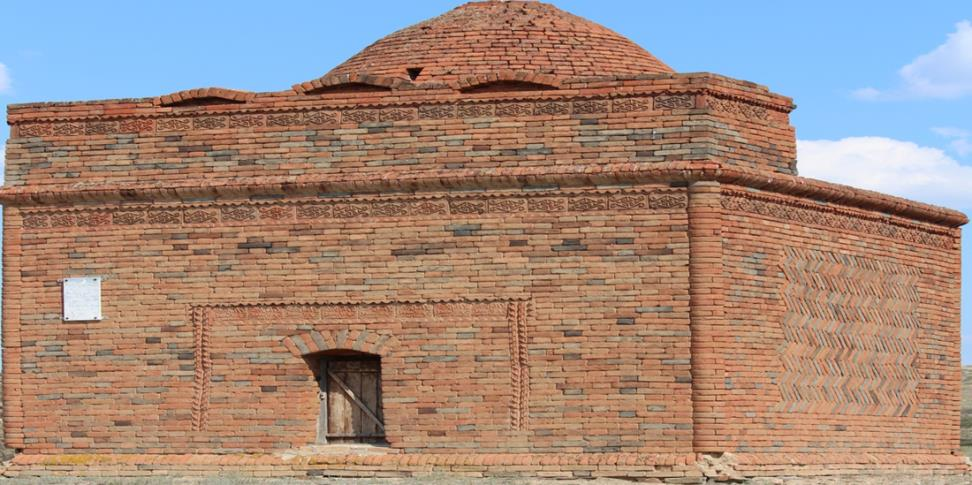
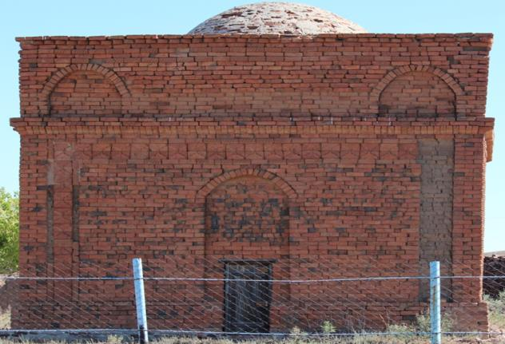
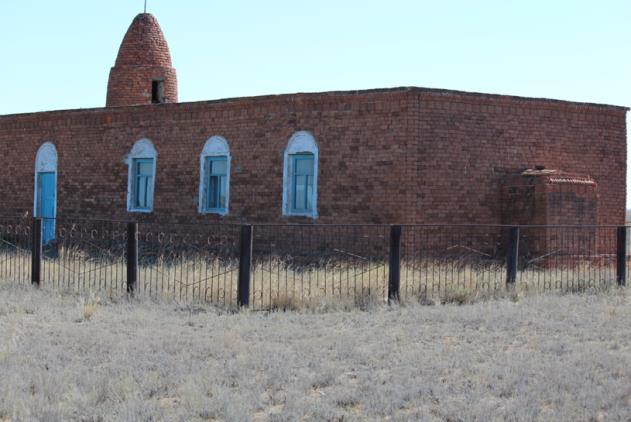
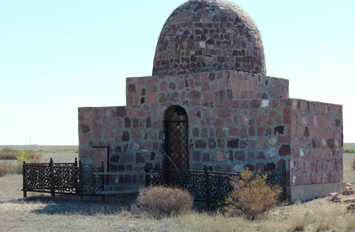

Мақат сахнасы
Мақат сахнасы - сәулет өнері ескерткіші. Қарағанды облысы Ұлытау ауданының Шеңбер ауылынан солтүстік-батысқа қарай 10 шақырым қашықтықта, Екідің ауылы Қараторғай өзенінің жағасында Мақат Саржанұлына арнап тұрғызылған. Ескерткіштің сыртқы ауданы 5,5х5,6 метр, жалпы биіктігі 6 метр, құрлысына көлемі 26х12х7 см болып келетін кірпіштер пайдаланылған. Сыртқы бұрыштары мен қабырға жиектері кірпішті жартылай доғал қалау арқылы шығыңқы бағанамен өрілген. Конус тәріздес күмбезі дөңгелек негіздің үстінде орнатылған. Бас қасбеті «П» пішіндес белдеумен сәнделіп, ортасынан доғалы кіреберіс есік шығарылған. Үш қабырғасы кілем оюына ұқсас, «S» тәрізді өрнекпен әсемделген. Негізгі қасбеттің ішкі қабырғасына саты орнатылған. Дәліз арқылы сатымен 1 метр тереңдіктегі қабірге түсуге болады. Оның есігі шымылдықпен жабылады. Әйел мен ер адамға арналған екі қабірдің (өлшемі 1,5х2,2 метр) бұрыштарында шаршы пішінді (өлшемі 0,6х0,6 метр) саңылау қалдырылған. Есік алдындағы сағанада үш құлпытас бар. Мақат сағанасы - Қазақстан Республикасы Үкіметінің 2008 жылғы 21 наурыздағы № 279 қаулысымен республикалық маңызы бар Тарих және мәдениет ескерткіштерінің мемлекеттік тізіміне енгізілген.
Қыз Тамы
Қыз Тамы – тарихи сәулет ескерткіші. Ертеде төлек руында Жәуке, Жәмеңке деген ағайынды адамдар өмір сүрген...
Орынбек мешіті
Орынбек мешіті деп аталу себебі, бұл мешітті Төлек Жәукенің немересі Орынбек салдырған...
Төлек Жәуке батыр ескерткіші
Белгілі тарихшы Ермұхан Бекмахановтың «Кенесары Қасымұлы бастаған ұлт-азаттық көтерілісі» атты зерттеуінде Жәуке батырдың есімі аталады...